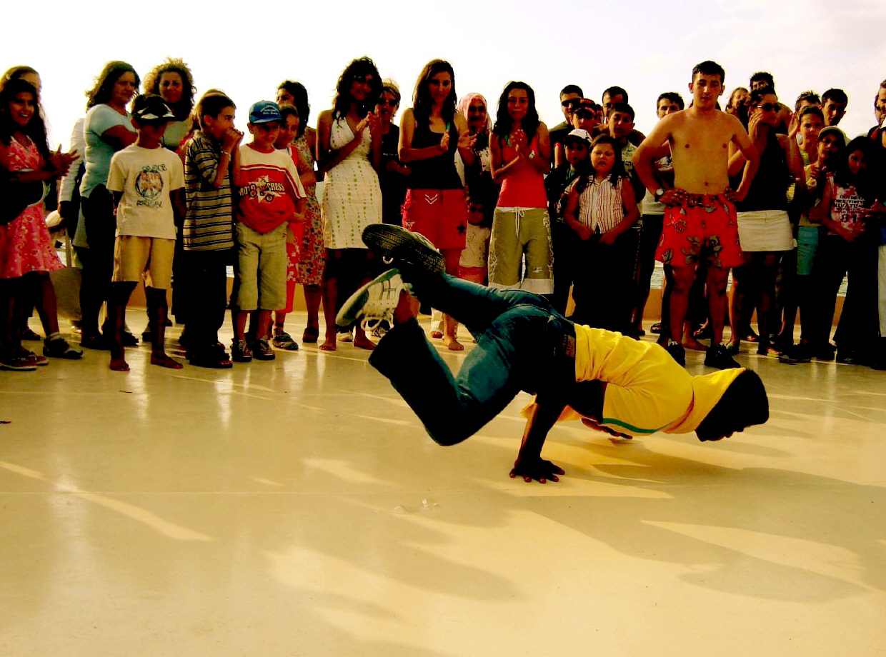

SOBRE NOSOTROS
Mucho más que una academia: una comunidad que vibra al ritmo del hip-hop
Nacimos del deseo de crear un lugar donde el baile urbano fuera más que una clase: una forma de expresión, de resistencia, de identidad. Desde nuestros inicios, hemos trabajado por formar un espacio auténtico, donde el hip-hop se respira en cada rincón, y cada persona que entra por nuestras puertas se siente parte de algo real.
Aquí enseñamos con el corazón. Nuestro equipo está formado por bailarines e instructores con años de experiencia en la escena urbana, tanto nacional como internacional. No solo transmiten pasos, sino valores: respeto, disciplina, libertad y pasión por la cultura hip-hop en todas sus formas—breaking, popping, locking, freestyle y más.

Ofrecemos clases para niños, adolescentes y adultos, en niveles que van desde lo básico hasta entrenamientos avanzados para competencias. Además, organizamos talleres intensivos, encuentros culturales, y espacios de improvisación para que nuestros alumnos se reten y evolucionen constantemente.
Lo que nos diferencia es el enfoque humano y el amor por lo que hacemos. Queremos que cada persona que pase por la academia no solo aprenda a bailar, sino que descubra su voz, su estilo y su poder.
Esto no es solo baile. Es movimiento, identidad y comunidad.
Si estás buscando un lugar donde puedas crecer como artista, expresarte sin miedo y rodearte de personas que comparten tu energía… entonces ya encontraste tu casa.